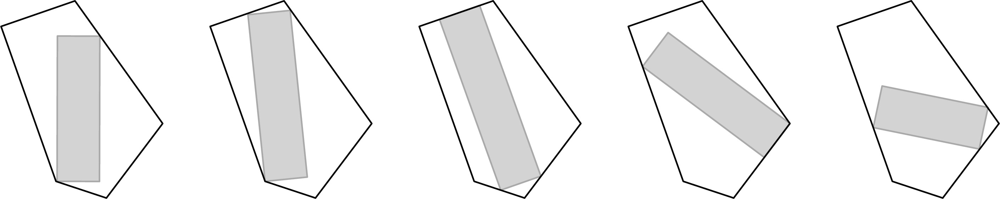
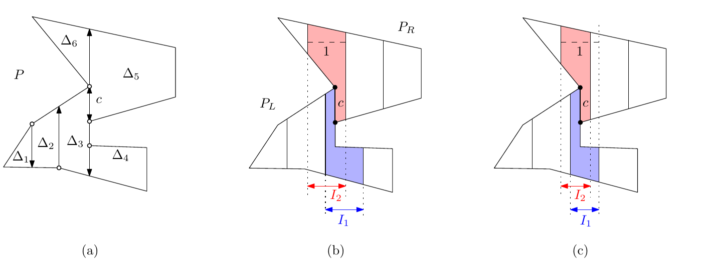
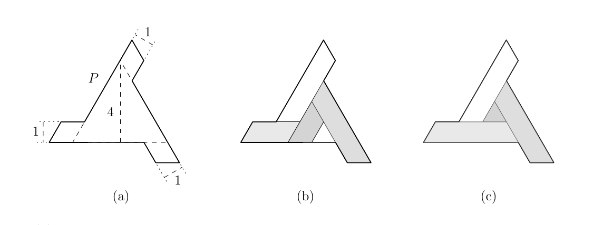
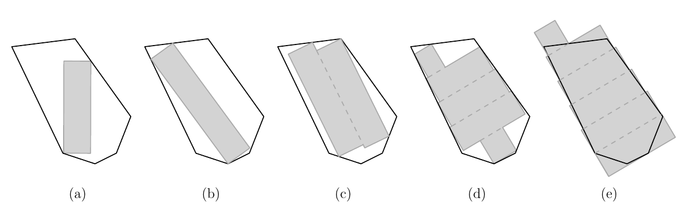

01
Computational geometry
Polygon partitioning, covering, containment, and approximation; lower bounds in geometric optimization.
Computational geometry · data structures · algorithms for AI
I work on computational geometry, data structures, and AI-assisted algorithm design, with a current focus on high-dimensional proximity search.
01 / Research
Geometric and combinatorial algorithms with provable guarantees.
01
Polygon partitioning, covering, containment, and approximation; lower bounds in geometric optimization.
02
Distribution-aware nearest-neighbor search, weighted selection, and geometric optimal transport.
03
Learning-augmented online scheduling and neural combinatorial optimization with theoretical guarantees.
02 / Upcoming
Oral presentation · WAAC 2026
26th Korea–Japan Joint Workshop on Algorithms and Computation · Pusan National University, Busan
03 / Papers
Figures are reproduced from the papers.

Representative paper · Computational Geometry 2025
Algorithms for a maximum-area unit-width rectangle over all orientations inside a convex polygon, including an output-sensitive method.


ISAAC 2025 · DCG, accepted
Minimum polygon partitions under width constraints and restricted cut directions, including guillotine and non-guillotine settings.

04 / Publications
Complete publication list: CV.
2026
SWAT 2026
2026
Discrete & Computational Geometry, accepted · ISAAC 2025
2026
Computational Geometry: Theory and Applications · FSTTCS 2022
2025
Computational Geometry: Theory and Applications
2024
Journal of KIISE 42(2)
2022
CCCG 2022